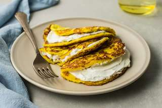

Cachapa

Description
Cachapa is a traditional dish made from maize flour from Venezuela. Like arepas, they are popular at roadside stands. They can be made like pancakes of fresh corn dough, or wrapped in dry corn leaves and boiled (cachapa de hoja).
Ingredients
- 2 cups fresh corn, cut from the cob*
- 1 egg
- 1/2 cup milk
- 4 Tbsp masa harina
- 1 Tbsp sugar
- 1 Tbsp salt
- 2 Tbsp butter
- 8 oz fresh mozzarella, sliced
Steps
- Add fresh corn, egg, milk, corn flour, sugar, and salt in a blender and blend until a thick paste form. Let stand for about 10 minutes for the mixture to thicken. (If your mixture is still too thin, add a little more masa harina or flour to thicken it to a spoon-able consistency.)
- Preheat a 5-1/2 inch frying pan, over medium heat.
- When the pan is hot, add some butter to grease it.
- Pour 1/3 cup of batter into the frying pan, making a circle around the pan.
- Cook for 4-5 minutes and flip with a spatula. Cook for 3 more minutes until the cachapa is golden brown
- Place sliced mozzarella on one half of the cachapa and let it melt. Fold the other half over the cheese and spread some butter on top. These are best if served hot, straight from the skillet.